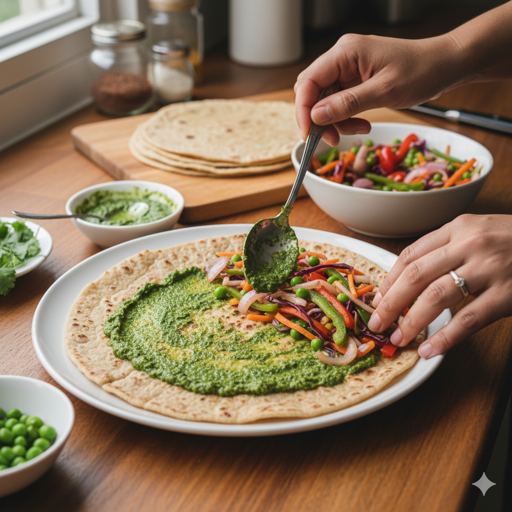

Leftover Roti Rolls & Egg Rolls
Veg Roti Roll Ingredients (1-2 servings):
- Leftover roti – 2-3
- Carrot – 1 small, grated
- Cabbage – 2 tbsp, shredded
- Capsicum – 1 small, sliced thin
- Onion – 1 small, thinly sliced
- Tomato ketchup / chutney – 1 tsp
- Salt & pepper – to taste
- Oil – 1 tsp
Egg Roll Ingredients (1-2 servings):
- Leftover roti – 2-3
- Eggs – 1-2
- Onion – 1 small, thinly sliced
- Capsicum – 1 small, sliced thin
- Tomato ketchup / sauce – 1 tsp
- Salt & pepper – to taste
- Oil – 1 tsp
Veg Roti Roll Steps:
- Heat 1 tsp oil in a pan, sauté onions, capsicum, carrot, and cabbage for 2-3 minutes. Add salt and pepper.
- Warm the roti on a pan or microwave.
- Spread tomato ketchup/chutney on roti.
- Place the cooked veggies in the center and roll tightly.
- Cut in half and serve hot.
Egg Roll Steps:
- Beat eggs with a pinch of salt and pepper.
- Heat oil in a pan, pour beaten eggs, and cook as a thin omelette.
- Warm the roti and spread ketchup/sauce on it.
- Place the omelette, onion, and capsicum on roti, roll tightly.
- Cut in half and serve hot.
Tips:
- Use leftover rotis for quick and easy rolls.
- Add cheese or paneer for extra flavor.
- You can toast the roll lightly on a pan for crispiness.

Delicious Veg and Egg Roti Rolls ready to enjoy!